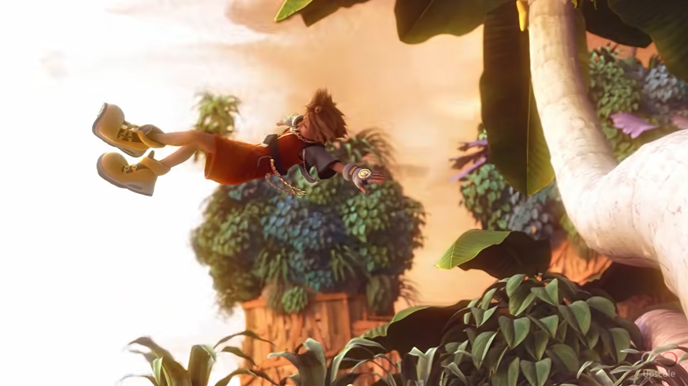
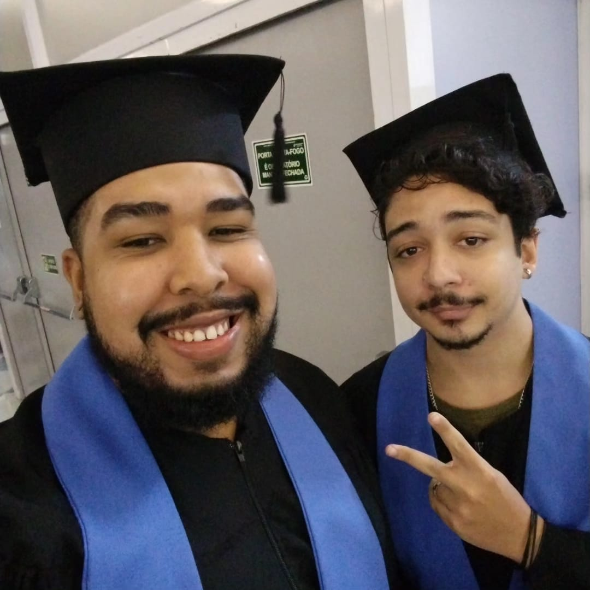
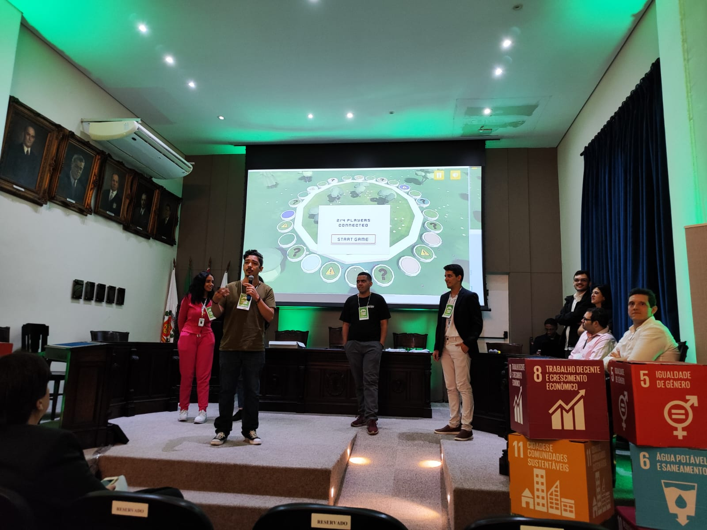
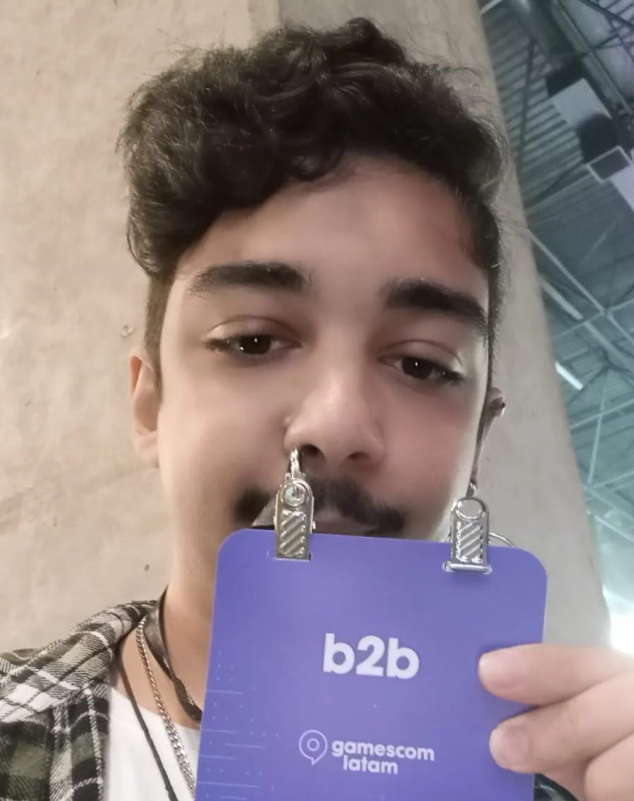
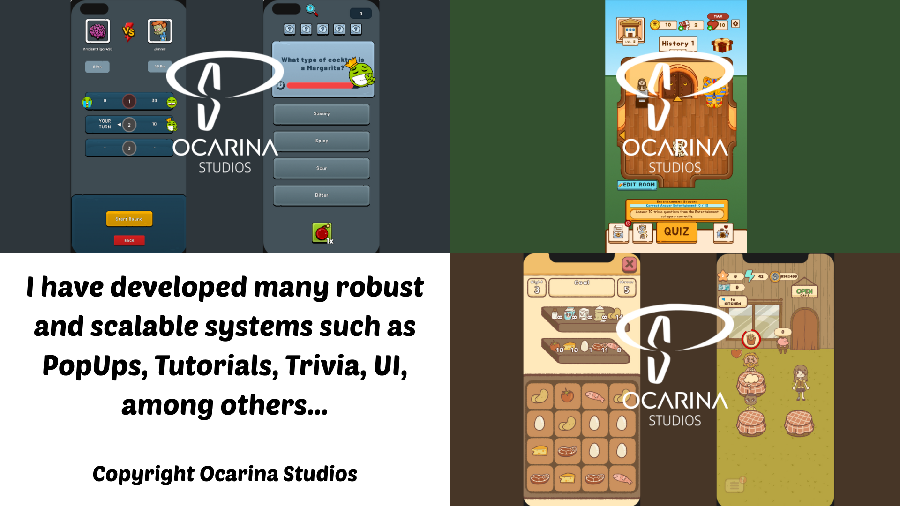

I am a programmer and game developer, specialized in systems programming and gameplay. I work mainly with Unity and Godot and I also work as an influencer in the area of game development and gameplay.
Gregory “Akapaya” Valentim
Game Developer
Game Programmer
UI/UX Implementer
Influencer
I've been interested in games since I was little, but my first ambition was to be a 3D Animator, inspired by the Kingdom Hearts 2 entrance cutscene.

So when I was 12 years old I was already making 3D animations using Minecraft models, and I started training in 3D modeling as well.
But it was with my first course focused on games that made me transfer my ambition to programming, because I realized how easy it was for me compared to the creativity of animations, but it was thanks to all my efforts as a child that gave me a lot of experience and knowledge to make incredible games with few resources.
My first project, “Nak O Resgate dos Animais”, was a finalist for the best TCCs of the Games Course, we were a team of 5 students, I was the only programmer and I was able to help a lot in all areas and manage the project because I had studied the other areas as a child.
After that, I was already working as a game programming instructor at a school in Santos, where I started as a gamification developer, but I ended up staying as a teacher later on.
When the pandemic started, the school ended up closing, so I got my second job, which was developing gamification on the WEB for a training company for other companies, where I stayed for about two years.
After that, I had a short period in an internship where I used a lot of different technologies like Firebase, VR, AR, Addresables, among many others, but I ended up staying for a short time to focus on college.
In my last year of college, I managed to get a job as a developer at Plundervolt, I had a great time there, it's a shame that our main project didn't go ahead (at least not yet). It was the best place I've worked so far, where my boss became a mentor to me.

Also my two main games are “When are you coming?” and “Hope”, which were two games that I made entirely alone at different times with a strong meaning, “When are you coming?” was made during the pandemic, where I wanted to represent how much love overcomes social isolation, while “Hope” was made after the pandemic at a time when I was suffering from depression and burnout, so I put a lot of my feelings into making these two games alone in difficult times.
In addition to currently having a project running together with other people for the SDG, which is a digital board game, which teaches through questions and consequences all 17 points of the SDG, in addition to sharing the importance of the 2030 mission.

I'm very happy that this year has been full of mentoring sessions. My former boss at Plundervolt has helped me a lot to evolve, giving me tips and helping me.
In addition, I'm in a mentoring project with ABStartups called "Create Games" by Sebrae, where they provide a lot of mentoring sessions on how to start a gaming company.
At Gamescom Latam 2024, I had the pleasure of meeting people from Unity who analyzed my portfolio and gave me a lot of feedback on how to improve.

I've always been interested in having a YouTube channel. I tried a few times when I was younger, but I wasn't mature enough to understand and treat it as a business. Now that I'm more mature, I know exactly what goals I want to achieve with the channel.
Doing it for fun is the main thing, but I want the community of players and developers to be more united for the good of games, to teach and pass on knowledge to other developers, while at the same time giving curious players the chance to see what it's like to develop a game.
I also like playing some games and discussing with the public what improvements or paths a game could take to be better received. This also encourages players to give more constructive criticism.
In addition to obviously having a channel to promote projects from my studio or wherever I'm working, I have many ideas for videos that I'd like to record, but that's still something to develop with a future team.
From September 2024 to April 2025, I was able to work at a great studio invited by the CEO (who I had worked for at Plundervolt), Ocarina Studios. It was an incredible experience!
It was my first experience with a medium/large team, so I was excited, but it exceeded my expectations to be able to count on them for what I needed. I learned a lot from all of them, improving my development of systems architecture, data handling and scalability, in addition to the development pipeline for games.
Now I feel more confident about my skills and knowledge, and I know I can handle the work that is given to me! Dream Team!

Contact Me
Thank you, your contact has been sent!
Sorry! Something happened and your email was not sent.
@ 2024 Akapaya. Todos os direitos reservados.
Akapaya, logotipo da Akapaya são marcas registradas de Akapaya
Arte desenvolvida por Thamires Dantas.
Design do site desenvolvido por Gregory Valentim.
Site desenvolvido por Gregory Valentim.